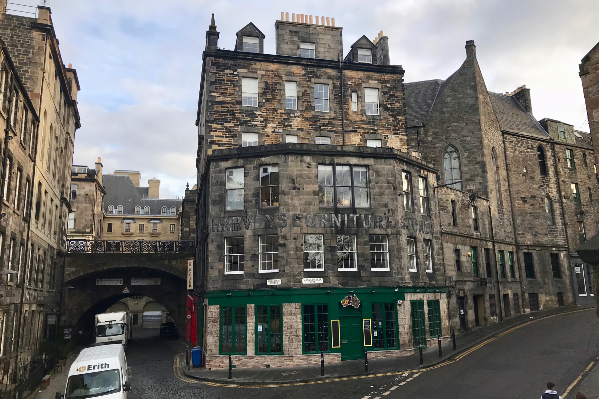
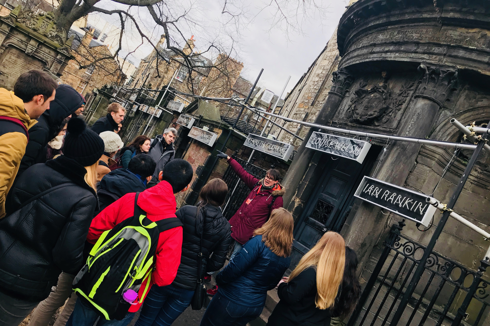
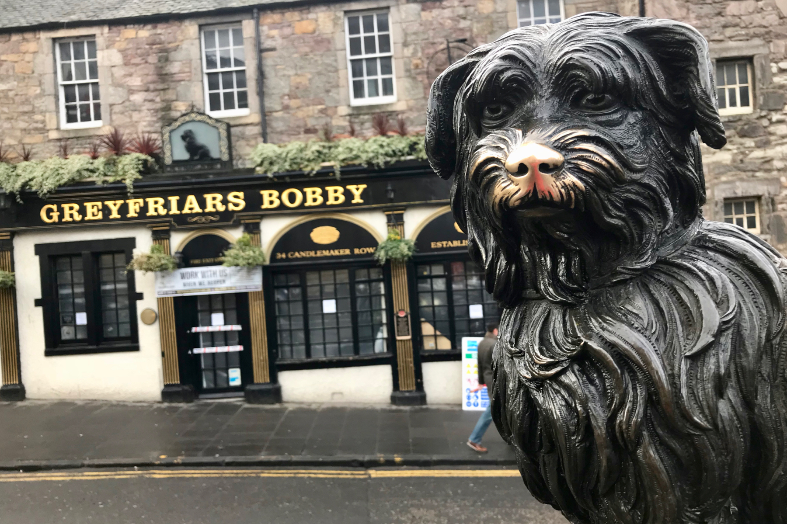
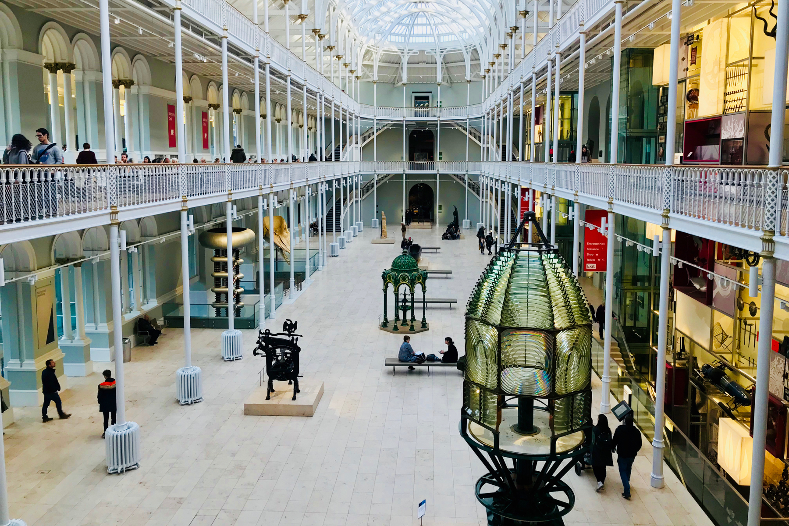
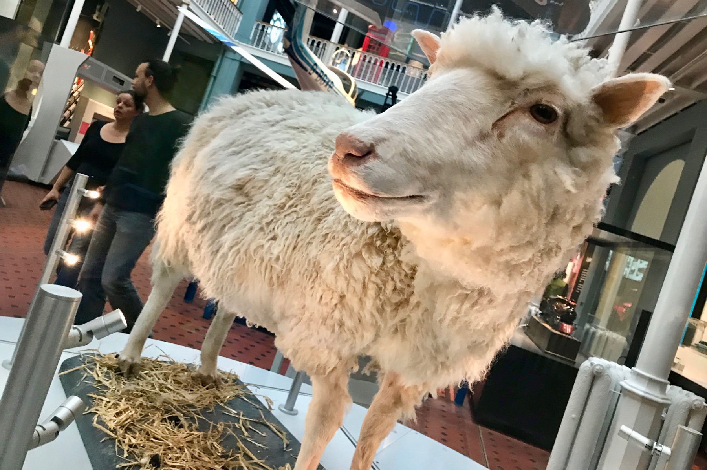

I am believing more and more that the very best way to start any trip is with a free walking tour. These tours are offered in many of the world’s top destinations and are a great way to quickly orient yourself to the highlights a city has to offer. Most walking tours do not go inside of the sites, churches, and castles, but rather offer stories and a local’s perspective on what makes the city unique. If you kick off a weekend trip with a free walking tour, then you will be well-equipped to spend the next days getting to know the city in greater detail on your own.
There are many Edinburgh free walking tours to choose from but I was most impressed with the promises claimed by the tour company SANDEMANs, which is a known brand across Europe. As I only had one day to enjoy Edinburgh, I thought it was a good decision to start my morning with their free walking tour and see where that would take me. The experience did not disappoint.
In A Nutshell
Highlights - Very knowledgeable tour guides with a flair for theatrics and a passion for helping you understand Edinburgh and Scotland. Local knowledge quickly orientates you to the city and helps you plan the rest of your trip.
Lowlights - Near the end of the tour there is a “coffee break” at their office where you are encouraged to buy tickets for paid tours. This would feel less scammy if after the coffee break there were another 1+ hours of walking, but there was only an additional 30 minutes or so.
Bottom line - The value for money is undeniable and even the sales pitch to join a paid tour is perfectly appropriate. You can’t blame someone for using a free tour as bait to sell you something which also carries a value. All in all, free walking tours might cost you something, but what you get back in return far exceeds whatever you might pay.
SANDEMANs Walking Tours
There were several tour companies offering free walking tours in Edinburgh but I was drawn to the sleek website and tour descriptions of SANDEMANs. I can’t say that they are the best since I haven’t compared them to other tour organizers in Edinburgh, but what I can say is that this was not my first free walking tour in Europe and in comparison to others I have taken it was at least equal to or better than any others that I have taken.
There are a wide variety of free and paid tours offered by SANDEMANs in Edinburgh. You can check out the tours and schedules on the SANDEMANs website.
I started my morning with the free walking tour and then I added the Edinburgh Castle tour to the afternoon. For both tours, I had the same guide; a really witty and very smart guy named Dave. I overheard a few other guides introduce themselves and though their dry nature might be preferred by some, I really enjoyed spending the day with Dave. If you get a chance to choose, I vote that you request Dave.
I was really lucky with the weather the day I was in Edinburg but what is good to know is that all of SANDEMANs tours will go on as scheduled rain or shine. The tours meet up on The Royal Mile which is the main street connecting the Edinburgh Castle at one end with the Royal Palace of Holyroodhouse on the other. The street in between is packed with shops and cafes, some of which even offer a discount to SANDEMANs ticket holders.
St Giles’ Cathedral
The first stop on the free walking tour is St Giles’ Cathedral. This +900-year-old cathedral is the seat of the Church of Scotland and is the most important cathedral in the country. As you can see in the photo below, there is a very interesting architectural feature in the steeple, which is shaped like a crown, rather than a point reaching to the heavens above, as is typical in church architecture around the world.
In nearly a millennium of history, you can imagine that St Giles’ Cathedral is tied to plenty of interesting and historically significant events. The one which Dave shared with us as his favorite story is about a street-seller named Jenny Geddes, who, during a religious service, became so upset at the archbishop that she threw her stool (the kind you sit on) at his head. This instantly turned in to a full-blown riot which spread across Scotland. These riots grew to become the Wars of the Three Kingdoms, which included the English Civil War.
St Giles’ Cathedral is also considered to be the mother church of Presbyterianism.
St Giles’ Cathedral in Edinburgh
The Elephant House
The next few stops constitute a micro-tour inside of the tour. If I had to name it, it would be the Origins of Harry Potter Tour. For Harry Potter fans, the next few sites will carry special significance. Up first: The Elephant House.
Pictured below, The Elephant House is a coffee shop inside of the Harvey’s Furniture Store building. If you look at the photo, the windows just above the building’s sign is the coffee shop. This is where J. K. Rowling wrote several of the early Harry Potter books.
Where I am standing to take this photo is the Greyfriars Kirkyard, a graveyard where many recognizable names from the novels can be found. But more on that later. First, we have to go to school.
 The Elephant House in Edinburgh where J.K. Rowling wrote Harry Potter
George Heriot’s School
Across the graveyard from The Elephant House stands George Heriot’s School. This private school is 400 years old and was founded to offer a premier education to Scotland’s fatherless children. The castle-like architecture makes it stand out atop this hill which is across a valley from the Edinburgh Castle.
As you can see pictured below, the square building has a tall tower in each corner. These four towers are each the home, or “house,” to a group of pupils. The house names are, Lauriston (green, after the school’s address, Lauriston Place), Greyfriars (white, named after the adjacent Greyfriars Kirk / Graveyard), Raeburn (red, after a famous former pupil, Henry Raeburn), Castle (blue, after Edinburgh Castle to the north).
The combination of this school with the four houses and the dramatic view of the Edinburgh Castle on a cliff across the way, form the basis of J. K. Rowling’s vision for Hogwarts School of Witchcraft and Wizardry.
George Heriot’s School in Edinburgh
Greyfriars Kirkyard
Turning back now to Greyfriars Kirkyard, this graveyard is home to many familiar names. Both names which hold real historical significance (James Douglas, Sir George McKenzie…) but also many names on these graves inspired characters in Harry Potter. For example, lawyer Thomas Riddell is the inspiration for Voldemort, and poet William McGonagall inspired the character of Professor McGonagall.
So why did these graves inspire these characters? It is simple: graveyards offer authors all around the world with free and easy access to name inspiration for books. It is actually a common practice for authors to take names from graves, just as J. K. Rowling did.
 Sir George McKenzie’s tomb in the Greyfriars Kirkyard
Greyfriars Bobby Memorial Statue
This is the tale of loyalty to the highest degree. Greyfriars Bobby was a Skye Terrier which belonged to John Grey, the caretaker of the Greyfriars Kirkyard. John Grey passed away and his dog, Bobby, continued to stay by his human’s grave for the next 14 years, refusing to leave its side for any prolonged period of time. Bobby is now a well-known and well-documented figure in Scotland’s history. There are movies and books which retell the story of Bobby and this statue is a tribute to that loyalty.
On the tour, we learned that the greatest honor a Scot can receive is to have a pub named after them. We saw pubs named after cultural icons, royalty, and politicians. Here, you can see the even Bobby has had this honor.
On another funny note: the graveyard actually has signs now saying that dogs are not allowed. Oh how times change.
 Greyfriars Bobby Memorial Statue
National Museum of Scotland
Our walking tour concluded at the National Museum of Scotland. This is a great destination because from here you can check out the museum, which is also free. The museum is divided by era of Scottish history, starting with pre-historical origins, then lots of stuff about Vikings, Roman rule, the independence movement led by William Wallace, and then all the way up to modern-day Scotland with its engineering achievements and most notably, Dolly the Sheep!
 National Museum of Scotland in Edinburgh
Dolly The Sheep
Alright, the whole day has been pretty awesome up until now but this is for me the clear highlight.
Dolly the Sheep is the first mammal to be cloned from an adult somatic cell. She was born in 1996 and is the creation of the University of Edinburgh. This leap in genetics paved the way for other animals to be cloned, including pigs, deer, horses, and bulls. Tonight as I wrote this post, the news broke that two identical long-tailed macaques in China are the first ever primates to be cloned using the technique that created Dolly the sheep.
And who knows, maybe one day I can get a clone of myself to help me write this blog!
 Dolly the Sheep in the National Museum of Scotland in Edinburgh
On a final note, the guides of this (and all) free walking tours are not paid at all for the tour they provide. They earn money only on tips from tour participants. So if you think the job they did was good, be sure to recognize them for that. Keeping in mind that a normal paid tour costs around 27£, offering a +10£ will go a long way for the guide and is really nothing at all for you as a participant. Be generous!
Conclusion
So what do you think? Have you toured Edinburgh before? Have you been on a walking tour (paid or free) before? How do you think this one measures up? I would love to hear your thoughts. Feel free to leave a comment below or you can reach me directly on Twitter at @judsonlmoore.
Judson L Moore
Travel addict. Ambitious about making the world a better place. Writing what I learn along the way.